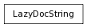

Set the __doc__ of an object to an object of this class in order to have a docstring that is dynamically generated when used.
Due to restrictions of inheriting from StringType (which is necessary, as the ‘help’ function does a check to see if __doc__ is a string), the creator can only take a single object.
Since the object initialization requires multiple parameters, the LazyDocString should be fed an sliceable-iterable on creation, of the following form:
LazyDocString( [documentedObj, docGetter, arg1, arg2, ...] )
documentedObj should be the object on which we are placing the docstring
docGetter should be a function which is used to retrieve the ‘real’ docstring - it’s args will be documentedObj and any extra args passed to the object on creation.
Example Usage:
>>> def getDocStringFromDict(obj):
... returnVal = docStringDict[obj]
... return returnVal
>>>
>>> # In order to alter the doc of a class, we need to use a metaclass
>>> class TestMetaClass(type): pass
>>>
>>> class TestClass(object):
... __metaclass__ = TestMetaClass
...
... def aMethod(self):
... pass
...
... aMethod.__doc__ = LazyDocString( (aMethod, getDocStringFromDict, (aMethod,)) )
>>>
>>> TestClass.__doc__ = LazyDocString( (TestClass, getDocStringFromDict, (TestClass,)) )
>>>
>>>
>>> docStringDict = {TestClass:'New Docs for PynodeClass!',
... TestClass.aMethod.im_func:'Method docs!'}
>>>
>>> TestClass.__doc__
'New Docs for PynodeClass!'
>>> TestClass.aMethod.__doc__
'Method docs!'
Note that new-style classes (ie, instances of ‘type’) and instancemethods can’t have their __doc__ altered.
In the case of classes, you can get around this by using a metaclass for the class whose docstring you wish to alter.
In the case of instancemethods, just set the __doc__ on the function underlying the method (ie, myMethod.im_func). Note that if the __doc__ for the method is set within the class definition itself, you will already automatically be modifying the underlying function.